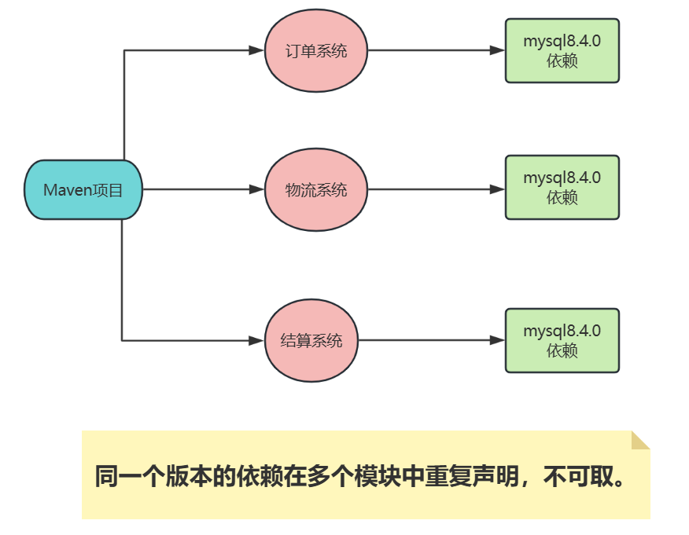
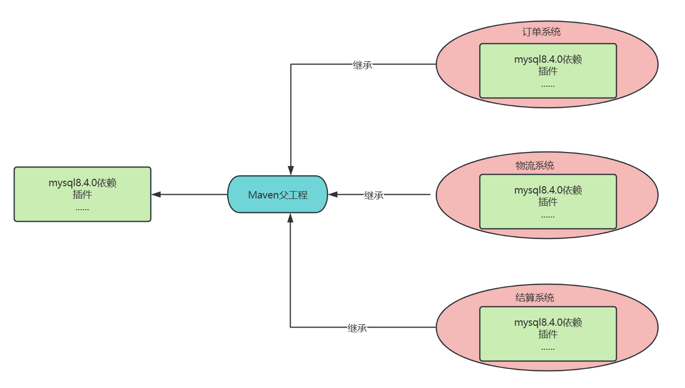
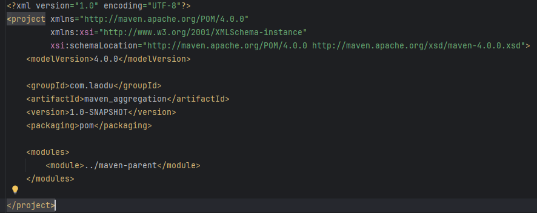
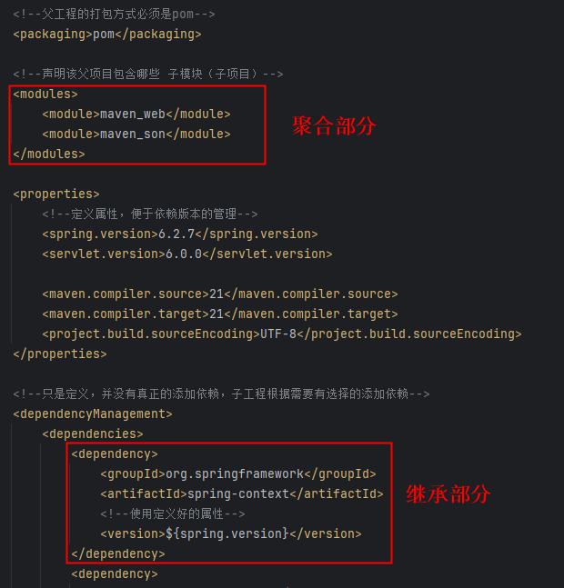
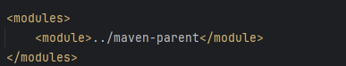
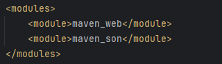
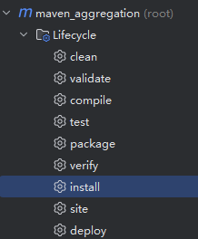
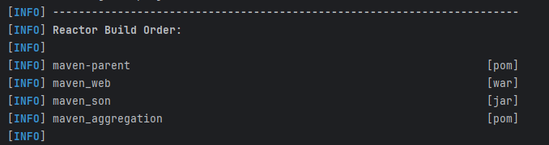

Maven 的依赖传递机制可以一定程度上简化 POM 的配置，但这仅限于存在依赖关系的项目或模块中。
当一个项目的多个模块都依赖于相同版本的 jar 包，且这些模块之间不存在依赖关系，这就导致同一个依赖需要在多个模块中重复声明，这显然是不可取的，大量的前人经验告诉我们，重复往往意味着更多的劳动和更高的潜在风险。

在 Java 面向对象中，我们可以建立一种类的父子结构，然后在父类中声明一些字段和方法供子类继承，这样就可以一定程度上消除重复，做到 “一处声明，多处使用”。在 Maven 的世界中，也有类似的机制，它就是 POM 继承。
Maven 在设计时，借鉴了 Java 面向对象中的继承思想，提出了 POM 继承思想。当一个项目包含多个模块时，可以在该项目中再创建一个父模块，并在其 POM 中声明依赖，其他模块的 POM 可通过继承父模块的 POM 来获得对相关依赖的声明。
如图所示：

父工程的 packaging 必须设为 pom，因为它本身不包含代码或需要构建产物（如 JAR/WAR），而是作为管理角色，用于统一配置（依赖、插件等）和聚合子模块（<modules>）。
简单来说：
<modules> 管理子模块，通过 <dependencyManagement> 统一依赖版本。 packaging=pom 是 Maven 识别父工程的标志，确保配置正确继承。如果误设为 jar，Maven 会尝试编译父工程（通常无代码），导致构建失败或逻辑混乱。
| 元素 | 描述 |
|---|---|
| groupId | 项目组 ID，项目坐标的核心元素 |
| version | 项目版本，项目坐标的核心元素 |
| description | 项目的描述信息 |
| organization | 项目的组织信息 |
| inceptionYear | 项目的创始年份 |
| url | 项目的 URL 地址 |
| developers | 项目的开发者信息 |
| contributors | 项目的贡献者信息 |
| distributionManagement | 项目的部署配置 |
| issueManagement | 项目的缺陷跟踪系统信息 |
| ciManagement | 项目的持续集成系统信息 |
| scm | 项目的版本控制系统信息 |
| mailingLists | 项目的邮件列表信息 |
| properties | 自定义的 Maven 属性 |
| dependencies | 项目的依赖配置 |
| dependencyManagement | 项目的依赖管理配置 |
| repositories | 项目的仓库配置 |
| build | 包括项目的源码目录配置、输出目录配置、插件配置、插件管理配置等 |
| reporting | 包括项目的报告输出目录配置、报告插件配置等 |
<?xml version="1.0" encoding="UTF-8"?>
<project xmlns="http://maven.apache.org/POM/4.0.0"
xmlns:xsi="http://www.w3.org/2001/XMLSchema-instance"
xsi:schemaLocation="http://maven.apache.org/POM/4.0.0 http://maven.apache.org/xsd/maven-4.0.0.xsd">
<modelVersion>4.0.0</modelVersion>
<groupId>com.jkweilai</groupId>
<artifactId>maven-parent</artifactId>
<version>1.0-SNAPSHOT</version>
<!--父工程的打包方式必须是pom-->
<packaging>pom</packaging>
<!--声明该父项目包含哪些 子模块（子项目）：聚合子项目-->
<modules>
<module>maven_web</module>
<module>maven_son</module>
</modules>
<properties>
<!--定义属性，集中管理版本号。便于维护。-->
<spring.version>6.2.7</spring.version>
<servlet.version>6.0.0</servlet.version>
<maven.compiler.source>21</maven.compiler.source>
<maven.compiler.target>21</maven.compiler.target>
<project.build.sourceEncoding>UTF-8</project.build.sourceEncoding>
</properties>
<!--只是定义，并没有真正的添加依赖，子工程根据需要有选择的添加依赖-->
<dependencyManagement>
<dependencies>
<dependency>
<groupId>org.springframework</groupId>
<artifactId>spring-context</artifactId>
<!--使用定义好的属性-->
<version>${spring.version}</version>
</dependency>
<dependency>
<groupId>jakarta.servlet</groupId>
<artifactId>jakarta.servlet-api</artifactId>
<version>${servlet.version}</version>
<scope>provided</scope>
</dependency>
</dependencies>
</dependencyManagement>
<build>
<!--只用于声明插件配置，不会实际执行插件-->
<pluginManagement>
<plugins>
<plugin>
<groupId>org.eclipse.jetty</groupId>
<artifactId>jetty-maven-plugin</artifactId>
<version>11.0.25</version>
<configuration>
<httpConnector>
<port>8080</port>
</httpConnector>
<webApp>
<contextPath>/</contextPath>
</webApp>
</configuration>
</plugin>
</plugins>
</pluginManagement>
</build>
</project>
<?xml version="1.0" encoding="UTF-8"?>
<project xmlns="http://maven.apache.org/POM/4.0.0"
xmlns:xsi="http://www.w3.org/2001/XMLSchema-instance"
xsi:schemaLocation="http://maven.apache.org/POM/4.0.0 http://maven.apache.org/xsd/maven-4.0.0.xsd">
<modelVersion>4.0.0</modelVersion>
<parent>
<groupId>com.jkweilai</groupId>
<artifactId>maven-parent</artifactId>
<version>1.0-SNAPSHOT</version>
</parent>
<!--可以省略groupId和version，与父工程保持一致-->
<artifactId>maven_web</artifactId>
<packaging>war</packaging>
<!--需要什么依赖添加什么依赖，可以省略版本号，版本由父工程统一管理-->
<dependencies>
<dependency>
<groupId>org.springframework</groupId>
<artifactId>spring-context</artifactId>
</dependency>
<dependency>
<groupId>jakarta.servlet</groupId>
<artifactId>jakarta.servlet-api</artifactId>
</dependency>
</dependencies>
<!--使用jetty插件-->
<build>
<plugins>
<plugin>
<groupId>org.eclipse.jetty</groupId>
<artifactId>jetty-maven-plugin</artifactId>
<version>11.0.25</version>
<configuration>
<!--子工程可以自定义端口号，不写就使用父工程的-->
<httpConnector>
<port>8081</port>
</httpConnector>
<webApp>
<contextPath>/</contextPath>
</webApp>
</configuration>
</plugin>
</plugins>
</build>
</project>
总结：通过继承可以实现子工程沿用父工程的配置。大大减少重复设置。
使用 Maven 聚合功能对项目进行构建时，需要在该项目中额外创建一个的聚合模块，然后通过这个模块构建整个项目的所有模块。聚合模块仅仅是帮助聚合其他模块的工具，其本身并无任何实质内容，对于一个**纯聚合模块**中只有一个 POM 文件，不包含 src 等目录。聚合模块的打包方式packaging也是 pom，可以在其 POM 中通过 modules 下的 module 子元素来添加需要聚合的模块的目录路径，以下是一个**纯聚合模块**的pom：
<?xml version="1.0" encoding="UTF-8"?>
<project xmlns="http://maven.apache.org/POM/4.0.0"
xmlns:xsi="http://www.w3.org/2001/XMLSchema-instance"
xsi:schemaLocation="http://maven.apache.org/POM/4.0.0 http://maven.apache.org/xsd/maven-4.0.0.xsd">
<modelVersion>4.0.0</modelVersion>
<groupId>com.jkweilai</groupId>
<artifactId>maven_aggregation</artifactId>
<version>1.0-SNAPSHOT</version>
<packaging>pom</packaging>
<modules>
<module>../maven-parent</module>
</modules>
</project>
什么是**纯聚合项目**，什么是**非纯聚合项目**？
pom.xml，其他的都没有，并且在pom.xml文件中只编写了<modules></modules>标签，如下：
**聚合部分**，又有**继承部分**，聚合和继承混合，例如之前的maven-parent项目，它的pom.xml文件中既有聚合部分又有继承部分，如下：
现代的开发方式一般都是**纯聚合**+**非纯聚合**的混合开发方式。
一键构建：通过聚合项目POM的<modules>配置，可以一次性构建所有子模块（不用挨个进目录执行命令）
对于之前的这几个项目：maven_aggregation、maven-parent、maven_son、maven_web，其中：
maven_aggregation是一个纯聚合项目maven-parent是一个既有聚合又有继承的项目maven_son是maven-parent的子项目maven_web是maven-parent的子项目在maven_aggregation中：

在maven-parent中：

这个时候执行maven_aggregation项目的install时：

所有被管理的子项目会按照顺序执行各自的install：
